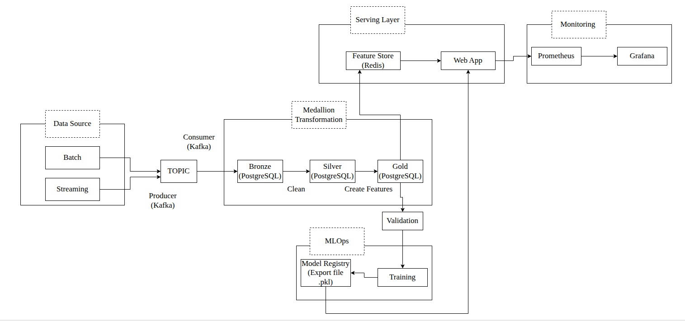
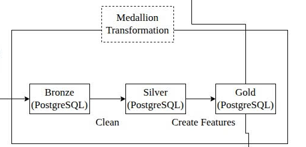
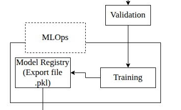
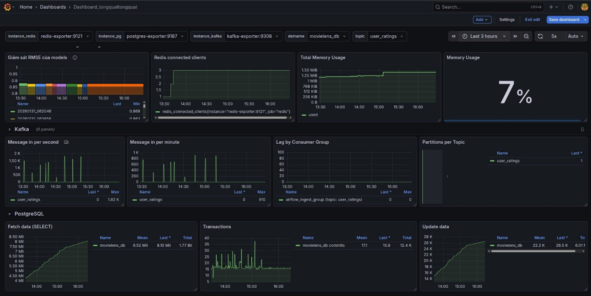

⚙️ Data & Orchestration
Điều phối Medallion Pipeline qua Airflow, chuẩn hóa dữ liệu từ Kafka để đảm bảo Feature Quality.

🧠 ML & Serving
Quản lý Model Registry và tối ưu Serving Latency với Redis Feature Store cho tốc độ Real-time.

🛠️ Monitoring
Theo dõi Model Drift và sức khỏe hệ thống qua Grafana, đảm bảo tính ổn định của Microservices.